1. Module summary
After searching (from Discovery Home or the header), the guest sees a list/grid of stays or expeditions matching their criteria, can refine with filters and sort, switch to a map, and open a listing. The map shows stays and activities as price pins; selecting a pin opens a preview card.
2. Business requirements covered (SRS)
| ID | Requirement | Priority | MVP | Where |
|---|---|---|---|---|
| FR-2.1 | Search properties by zone, dates, guest count, price range, property type, amenities | High | MVP ✓ | Property Search Results + Filter panel |
| FR-2.2 | Search activities by zone, category, date, price range | High | MVP ✓ | Activity Search Results |
| FR-2.3 | Open a property/activity detail page | High | MVP ✓ | Card click / "View Sanctuary" (→ module 05) |
| FR-2.5 | View properties/activities/POIs on a map | High | MVP ✓ | Map View + Pin popover |
| FR-2.6 | Filter/sort by rating, price, distance, popularity | Medium | MVP ✓ | Filter pills, Filter panel, Sort control |
| FR-7.1 | Save to favourites | Medium | MVP ✓ | Heart on cards |
| NFR-1 | Results load < 2 s on 4G for 95% of requests | — | MVP ✓ | All result screens |
| §5.2 / §5.3 | Device GPS for "near me"; Google Maps or Mapbox | — | MVP ✓ | Map View (no "near me" control designed) |
3. Screen inventory
| # | Screen | States | Breakpoints |
|---|---|---|---|
| 4.1 | Property Search Results | Default · Filter panel open | All 4 |
| 4.2 | Activity Search Results | Default | All 4 (no filter/empty state designed) |
| 4.3 | Map View | Default · Map pin detail popover | All 4 |
4. Screen specifications
4.1 Property Search Results
Entry: Search Dahab (home), curated chips, "See all" on a zone, "Discover Stays" nav link. Exit: Property Detail, Map View, Filter panel, Modify search.
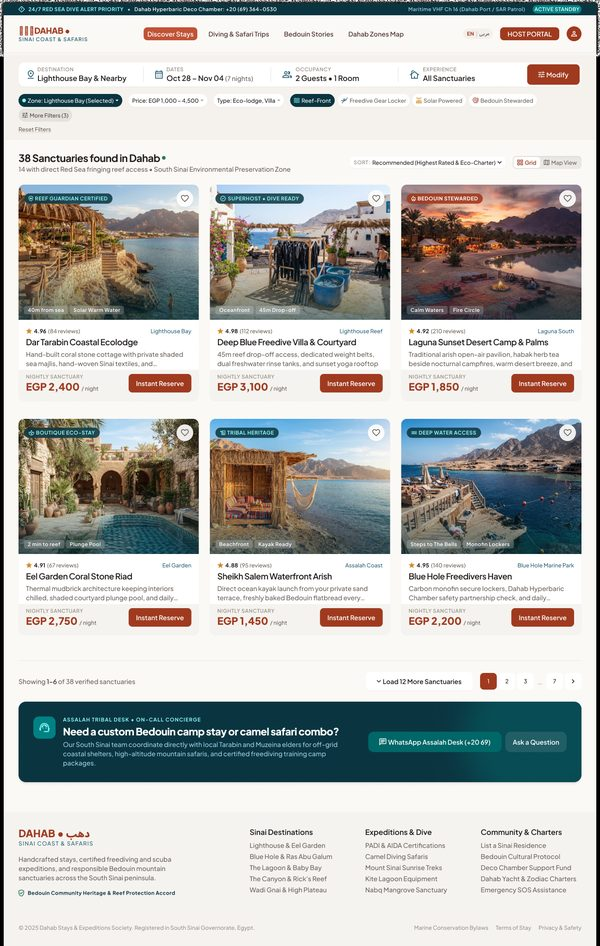
Open in Figma · 16:12886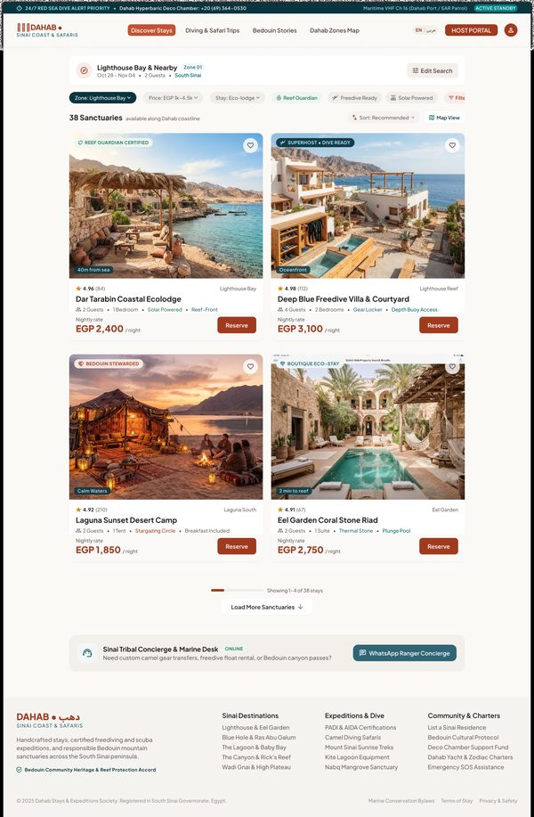
Open in Figma · 16:12030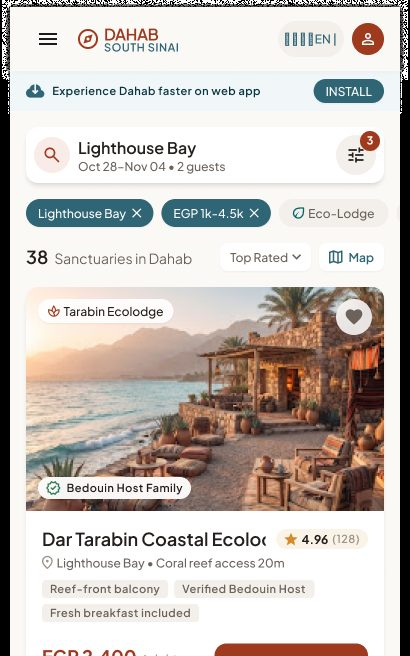
Open in Figma · 16:11448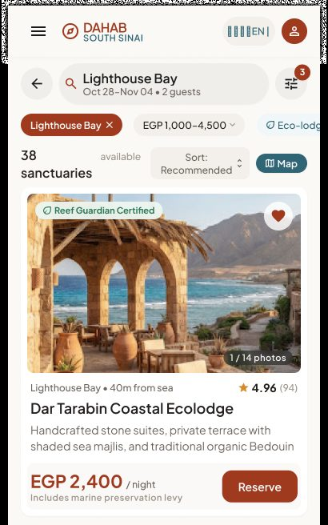
Open in Figma · 16:10931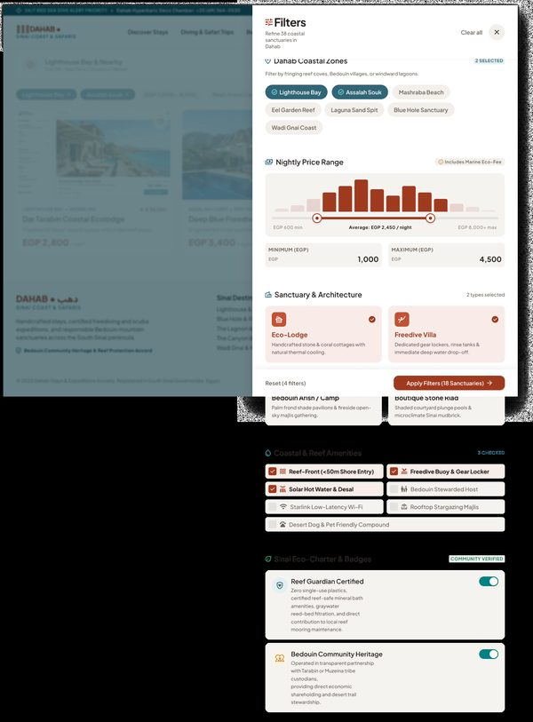
Open in Figma · 16:13434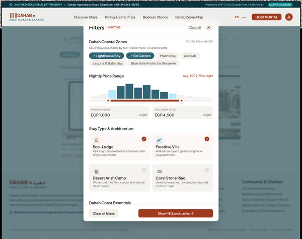
Open in Figma · 16:12476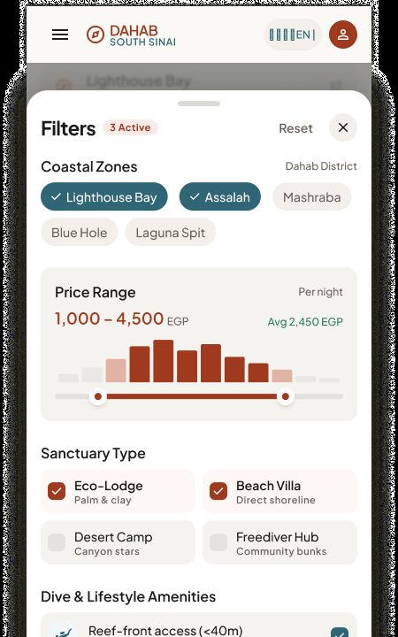
Open in Figma · 16:11748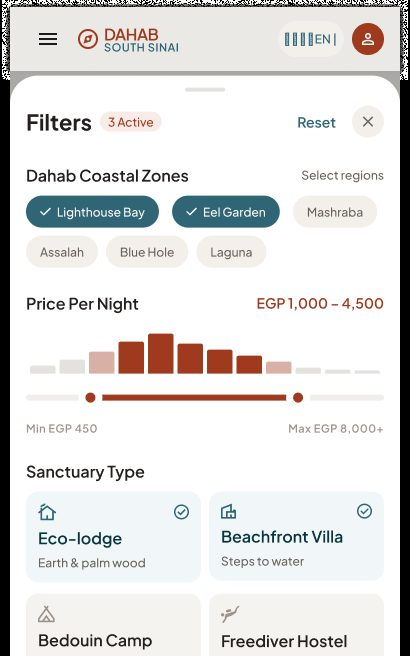
Open in Figma · 16:11188UI elements
| Element | Content (Figma) | Behaviour / rule |
|---|---|---|
| Emergency strip (desktop/tablet) | "24/7 RED SEA DIVE ALERT PRIORITY — Deco Chamber +20 (69) 364-0530 — VHF Ch 16 — ACTIVE STANDBY" | Static; tel: link. |
| Search summary | DESTINATION "Lighthouse Bay & Nearby" · DATES "Oct 28 – Nov 04 (7 nights)" · OCCUPANCY "2 Guests • 1 Room" · EXPERIENCE "All Sanctuaries" · Modify (Tablet/Mobile: "Edit Search"; Native: criteria pill) | Modify re-opens the search inputs in place. Nights computed from dates. |
| Quick filter pills | Zone: Lighthouse Bay (Selected) · Price: EGP 1,000–4,500 · Type: Eco-lodge, Villa · Reef-Front · Freedive Gear Locker · Solar Powered · Bedouin Stewarded · More Filters (3) · Reset Filters | Pill with value opens its dropdown; toggle pills switch on/off; "More Filters" opens the panel; counter = number of active advanced filters. |
| Result count | "38 Sanctuaries found in Dahab" + "14 with direct Red Sea fringing reef access" | Updates after every filter change. |
| Sort | "Recommended (Highest Rated & Eco-Charter)"; mobile "Top Rated"; tablet panel "Reef Proximity" | Options to confirm (see §7): Recommended, Price low→high, Price high→low, Rating, Distance, Popularity. |
| View toggle | Grid · Map View (native: "Map") | Switches to Map View keeping all criteria. |
| Listing card | Badge (REEF GUARDIAN CERTIFIED / SUPERHOST • DIVE READY / BEDOUIN STEWARDED), photo (native: "1 / 14 photos" swipe), distance tag ("40m from sea"), amenity tags, rating + review count, zone, name, 1-line description, "EGP 2,400 / night", inclusion note ("Includes marine preservation levy"), CTA Instant Reserve / Reserve, heart | Card → Property Detail. Reserve → Property Detail with room/date selector focused (module 06). Price per night for the searched dates. |
| Pagination | "Showing 1–6 of 38 verified sanctuaries" + Load 12 More Sanctuaries (native "Load 10 More", mobile "Load More Stays (35 remaining)") | Appends the next page; keeps scroll position. |
| Concierge box | "ASSALAH TRIBAL DESK • ON-CALL CONCIERGE — Need a custom Bedouin camp stay or camel safari combo?" + WhatsApp Assalah Desk + Ask a Question | Opens WhatsApp chat to the platform desk (not the host). |
Filter panel (state)
| Group | Options (Figma) |
|---|---|
| Dahab coastal zones (multi) | Lighthouse Bay · Assalah Souk · Mashraba Beach · Eel Garden Reef · Laguna Sand Spit · Blue Hole Sanctuary · Wadi Gnai Coast ("2 SELECTED") |
| Nightly price range | Slider with histogram EGP 600 min → 8,000+ max; inputs MINIMUM/MAXIMUM; "Average: EGP 2,450 / night"; "Includes Marine Eco-Fee" |
| Sanctuary & architecture (multi) | Eco-Lodge · Freedive Villa · Bedouin Arish / Camp · Boutique Stone Riad ("2 types selected") |
| Coastal & reef amenities (multi) | Reef-Front (<50m shore entry) · Freedive Buoy & Gear Locker · Solar Hot Water & Desal · Bedouin Stewarded Host · Starlink Wi-Fi · Rooftop Stargazing Majlis · Desert Dog & Pet Friendly ("3 CHECKED") |
| Sinai Eco-Charter & badges (toggles) | Reef Guardian Certified · Bedouin Community Heritage |
| Actions | Reset (4 filters) · Apply Filters (18 Sanctuaries) |
Desktop shows the panel as a side drawer with a live preview of matching stays; Tablet as a centred modal; Mobile/Native as a bottom sheet.
Step-by-step
| # | Guest does | System does |
|---|---|---|
| 1 | Arrives with criteria | Returns first page, sorted "Recommended"; shows count and active pills. |
| 2 | Toggles a quick pill (e.g. Reef-Front) | Re-queries; updates count, cards and pill state. |
| 3 | Opens More Filters, changes options | Live count on the Apply button. |
| 4 | Taps Apply Filters (N) | Closes panel, reloads results, shows the active count on "More Filters (n)". |
| 5 | Taps Reset | Clears all filters (keeps destination/dates/guests). |
| 6 | Changes sort | Re-orders results from page 1. |
| 7 | Taps Load more | Appends the next page. |
| 8 | Taps Map View | Opens 4.3 with the same criteria. |
| 9 | Taps a card / Reserve | Opens Property Detail (05). |
| 10 | No results | Shows the shared "No results" pattern (see module 02 §4.3). |
4.2 Activity Search Results
Entry: "Diving & Safari Trips" nav, activity category pills, Search with an expedition type. Exit: Activity Detail, Map View.
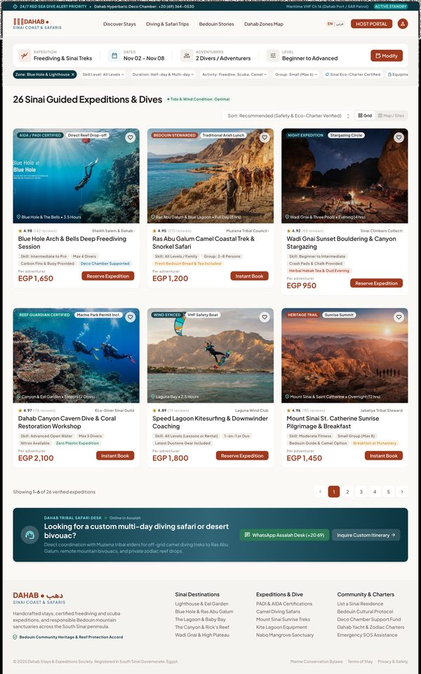
Open in Figma · 16:14926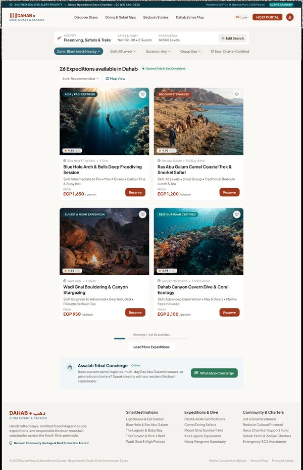
Open in Figma · 16:14535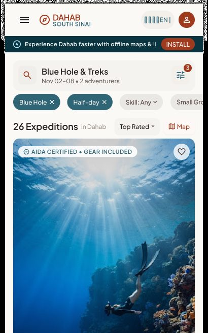
Open in Figma · 16:14246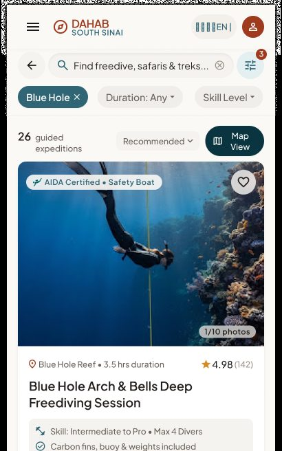
Open in Figma · 16:13937UI elements
| Element | Content (Figma) | Behaviour / rule |
|---|---|---|
| Search summary | EXPEDITION "Freediving & Sinai Treks" · DATES "Nov 02 – Nov 08" · ADVENTURERS "2 Divers / Adventurers" · LEVEL "Beginner to Advanced" · Modify | Activity search uses a date range + participants + skill level. |
| Filter pills | Zone: Blue Hole & Lighthouse · Skill Level: All Levels · Duration: Half-day & Multi-day · Activity: Freedive, Scuba, Camel · Group: Small (Max 6) · Sinai Eco-Charter Certified · Equipment Provided · Bedouin Guide Led · + Filters (4) · Reset Filters | Same behaviour as property pills. |
| Result header | "26 Sinai Guided Expeditions & Dives" · "Tide & Wind Condition: Optimal" · Sort "Recommended (Safety & Eco-Charter Verified)" · Grid / Map / Sites | — |
| Activity card | Badge (AIDA / PADI CERTIFIED, BEDOUIN STEWARDED, NIGHT EXPEDITION…), location + duration ("Blue Hole & The Bells • 3.5 Hours"), rating (4.98 (142 reviews)), operator/guide ("Sheikh Salem & Dahab Freedivers"), name, skill ("Intermediate to Pro"), group cap ("Max 4 Divers"), 2 inclusions ("Carbon Fins & Buoy Provided", "Deco Chamber Supported"), price "EGP 1,650 per adventurer", CTA Reserve Expedition / Instant Book | Card → Activity Detail. Price per person. |
| Pagination | "Showing 1–6 of 26 verified expeditions"; native "Load 10 More Expeditions"; mobile "Load More Expeditions (23 remaining)" | Append next page. |
| Concierge | "DAHAB TRIBAL SAFARI DESK — Online in Assalah" · WhatsApp · Inquire Custom Itinerary | Custom multi-day requests. |
Step-by-step
Same as 4.1 steps 1–9, using activity filters (skill, duration, activity type, group size, equipment, guide type). Reserve / Instant Book → Activity Detail with the session picker (module 07).
4.3 Map View & pin detail popover
Entry: "Map View" toggle on results, "Interactive Map" on home/zone pages. Exit: "Grid/List" toggle back; pin card → detail.
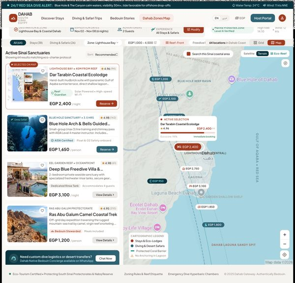
Open in Figma · 16:17173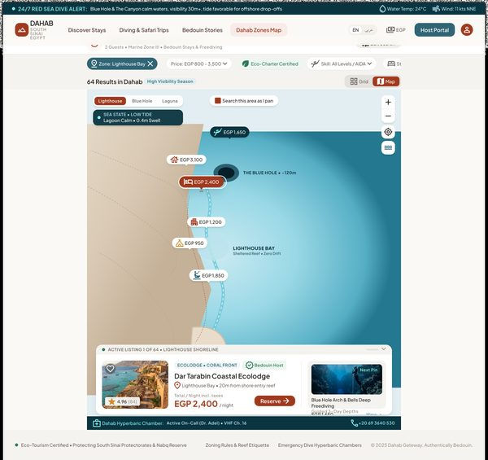
Open in Figma · 16:16555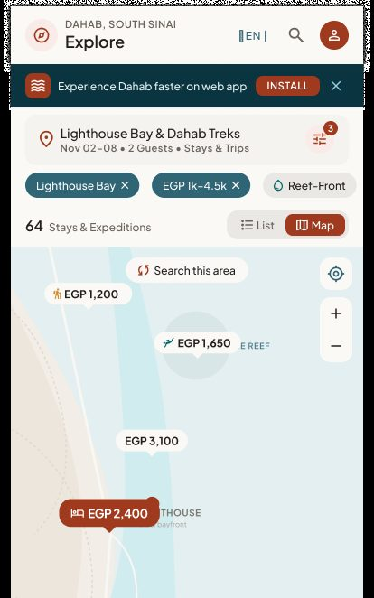
Open in Figma · 16:16044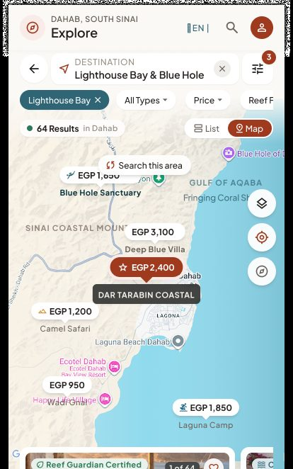
Open in Figma · 16:15514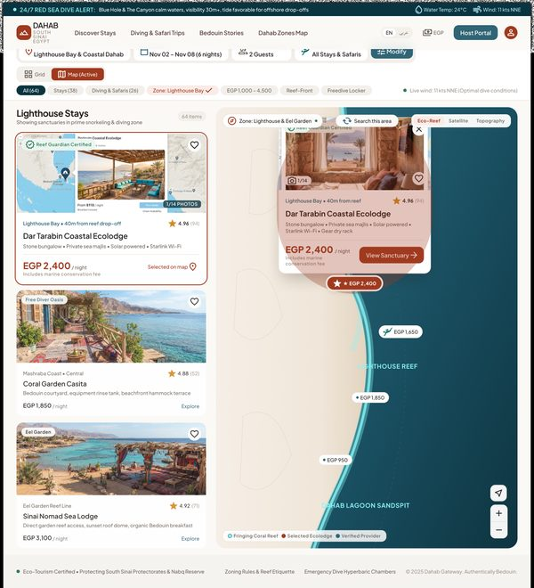
Open in Figma · 16:17703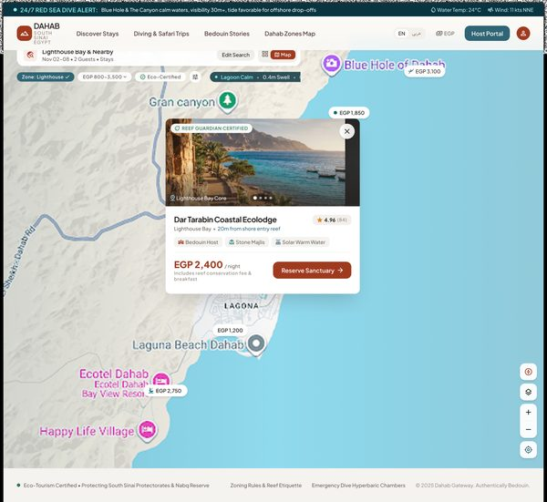
Open in Figma · 16:16913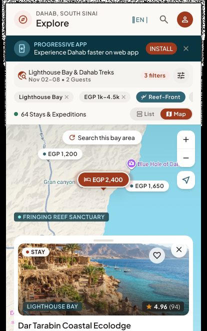
Open in Figma · 16:16301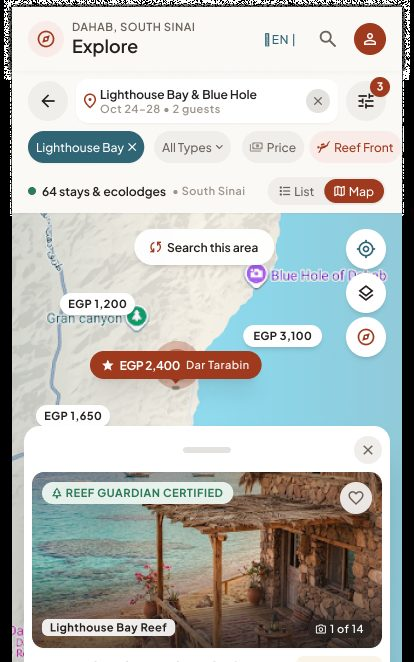
Open in Figma · 16:15802UI elements
| Element | Content (Figma) | Behaviour / rule |
|---|---|---|
| Type tabs | All (64) · Stays (38) · Diving & Safaris (26); mobile toggle "Stays & Expeditions" | Filters pin types. |
| Filter pills + Modify | Same as results | Same criteria as the list. |
| Split list (desktop) | "Active Sinai Sanctuaries", Sort, list cards; selected card flagged "SELECTED ON MAP" | Hover/select a card highlights its pin and vice versa. |
| Map | Price pins ("EGP 1,200"), stay vs expedition pin styles, zone labels (Lighthouse Bay, Blue Hole Marine Reserve, Laguna…), protected-area overlays | Maps provider per SRS §5.3 (Google Maps or Mapbox). |
| Search this area | Button / "Search this area as I pan" checkbox (tablet) | Re-queries within the visible bounds. |
| Map style | Satellite · Terrain · Eco-Reef (desktop) | Changes base layer ("Eco-Reef" needs a custom reef layer — see §7). |
| Legend | Stays & Eco-Lodges · Diving & Desert Safaris · Protected Coral Barrier · No Anchoring in Lagoon | Static. |
| Sea-state chip (tablet) | "SEA STATE • LOW TIDE — Lagoon Calm • 0.4m Swell" | Same data source as module 02 conditions. |
| Bottom carousel (native/mobile) | Cards "1 of 64", swipe | Swiping moves the map to the next pin. |
| List / Grid toggle | "List" (native) / "Grid" | Returns to results with same criteria. |
| Pin detail popover | Selected pin highlighted in terracotta ("★ EGP 2,400"); card: photo "1/14", badge (Reef Guardian Certified), name, location ("Lighthouse Bay • 40m from reef drop-off"), amenities line, rating, price, "Includes marine conservation fee", CTA View Sanctuary (tablet "Reserve Sanctuary"; mobile shows "Total EGP 14,400 (6 nights, incl. reef fee)" + Reserve); close ✕ / drag handle on native | Tap pin → open card; tap ✕, map background or another pin → close/switch; card CTA → Detail (05). |
Step-by-step
| # | Guest does | System does |
|---|---|---|
| 1 | Taps Map View | Fits the map to all results; shows count ("64 Results"). |
| 2 | Pans/zooms | If "Search this area as I pan" on → auto re-query; else shows Search this area button. |
| 3 | Taps a pin | Highlights pin, opens the popover (desktop/tablet) or bottom sheet (mobile/native). |
| 4 | Taps ✕ / outside | Closes the card, stays on the map. |
| 5 | Taps View Sanctuary / Reserve | Opens Listing Detail. |
| 6 | Switches tab All/Stays/Diving | Filters pins and list. |
| 7 | Taps List / Grid | Back to results, same criteria and scroll. |
5. Cross-screen business rules
- Search criteria (zone, dates, guests/rooms, type, filters, sort) are kept in the URL (web) / navigation state (native) so back/forward and sharing work.
- Only approved, active listings with availability for the dates are returned; if no dates, show "from" prices.
- Property prices = nightly rate for the selected dates incl. mandatory eco/marine fees; activity prices = per person.
- Pins cluster when zoomed out (not designed; recommended for performance).
- Rating shown only when a listing has ≥ 1 review (define minimum, e.g. 3).
- Concierge/WhatsApp desk links go to the platform support number, not to a host (host messaging FR-8.1 is Phase 2).
6. Story candidates for Jira
Epic: GUEST-SEARCH — Search Results & Map
| Key idea | Story | Acceptance criteria |
|---|---|---|
| SRCH-1 | As a guest, I want to see stays matching my zone, dates and guests. | Count, cards and pagination as designed; < 2 s on 4G; criteria editable via Modify. |
| SRCH-2 | As a guest, I want quick filter pills for stays. | Each pill filters; active state visible; Reset clears. |
| SRCH-3 | As a guest, I want advanced stay filters (zones, price, type, amenities, eco badges). | Live count on Apply; Reset; panel layout per breakpoint. |
| SRCH-4 | As a guest, I want to sort results. | Sort options agreed in §7 G2; re-orders from page 1. |
| SRCH-5 | As a guest, I want to load more results. | Next page appended; "Showing x–y of N" updates. |
| SRCH-6 | As a guest, I want to search guided activities by type, dates, participants and skill level. | Activity cards show duration, skill, group cap, inclusions, per-person price. |
| SRCH-7 | As a guest, I want activity filters (zone, skill, duration, type, group size, equipment, guide). | Filter panel for activities needs design; same behaviour as SRCH-3. |
| SRCH-8 | As a guest, I want to see results on a map. | Pins with price; list/map sync on desktop; Search this area; type tabs. |
| SRCH-9 | As a guest, I want to preview a pin without leaving the map. | Popover/bottom sheet with photo, name, rating, price, CTA; dismiss keeps map state. |
| SRCH-10 | As a guest, I want to ask the local desk for custom trips. | WhatsApp deep link to support number with prefilled message incl. search criteria. |
| SRCH-11 | As a guest, I want to find stays "near me". | Not designed — GPS permission + distance sort (SRS §5.2). |
7. Gaps, inconsistencies & open questions
| # | Finding | Suggested decision |
|---|---|---|
| G1 | Activity Search has no Filter-panel state and no empty state. | Design both (reuse property pattern). |
| G2 | Sort options differ (Recommended / Top Rated / Reef Proximity / Safety & Eco-Charter Verified) and SRS asks for rating, price, distance, popularity. | Agree one sort list for stays and one for activities. |
| G3 | Page sizes differ (6 / 4 / 3 cards, "Load 12 / 10 more"). | Define page size per breakpoint. |
| G4 | Price ranges differ between Home filter (800–6,000+) and Search filter (600–8,000+). | Derive min/max from data. |
| G5 | "Near me" / GPS (SRS §5.2) not designed on map or results. | Add "Use my location" to map and distance sort. |
| G6 | Map style "Eco-Reef" and overlays (Protected Coral Barrier, No Anchoring zones) need custom geo data. | Decide MVP (probably Satellite/Terrain only). |
| G7 | "Instant Reserve / Instant Book" implies instant confirmation — SRS FR-15.2 lets providers confirm bookings. | Define booking confirmation mode (instant vs request) per listing. |
| G8 | "Sites" in "Map / Sites" toggle (activities) is undefined. | Clarify (POIs layer?) or remove. |
| G9 | Mobile Web pin card shows total for 6 nights; other breakpoints show per-night. | Choose one (recommend per-night + total when dates set). |
8. Out of scope for MVP
- Personalised ranking (FR-11.1), multi-currency (FR-20.3), content auto-translation (FR-2.7).